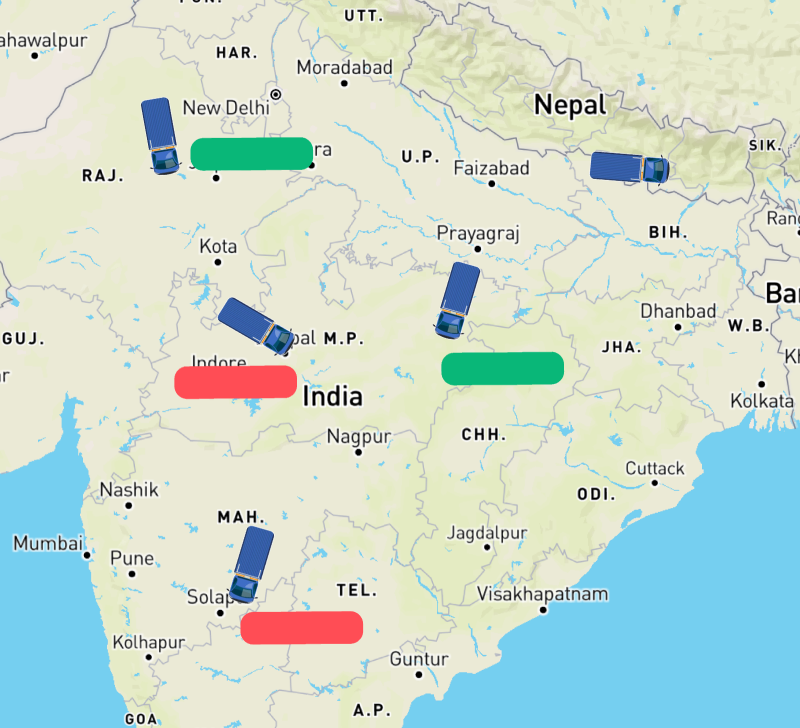

Liveasy
How do you Track your Vehicle’s Location?

Guide to Track Location
01 INTRODUCTION
Technology has made it possible for you to track your vehicle immediately. With the help of GPS tracking system, now you can get to know the real-time position of your vehicle, no matter where you are.
02 CONTENT
How a GPS vehicle tracking system works, it is a combination of the locator along with the software which updates you with your real-time location. The locator of the modern vehicle tracking systems is GPS (Global Positioning System).


02.1 How Does a Vehicle Tracking System Operate?
In a vehicle GPS tracking system, the following four components make communication possible:
- GPS satellite
- Vehicle tracking device
- Wireless network
- GPS servers
02.2 Benefits of a GPS Tracking System:
The technology has evolved in a great way and some of the technology used will be:
- With 24X7 live tracking feature users can track the location of their goods from anywhere and at any time.GPS will evolve more we would probably be able to know the location in 3D form.
- Tracking: You can easily track your car if it has a GPS tracker installed in it. Whether you lend your car to somebody or you want to find your car in a huge parking lot, the GPS tracker will lead you to your car.
- Theft: In the case of vehicle theft, you can locate your car with the help of the GPS tracker in your car and inform the police.
- Monitoring: You can monitor the statistics of your car in terms of speed, direction, and geographical location of the car.

These advances in technology will obviously result in goods being delivered around the corner, to the next town, to the next country, and around the world in a way that is more efficient, quick and cost effective. But, it is not only that.
03 CONCLUSION
In conclusion, technology has changed the way we do business. This is true for all industries, but logistics is no exception. We are now able to do things that were once impossible. For example, we are able to track shipments in real-time, manage inventory and orders more efficiently, and even predict demand. This is just the beginning of what the future holds.